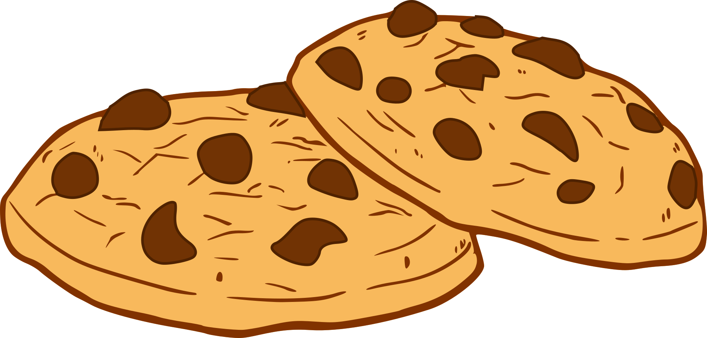
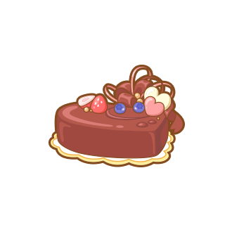
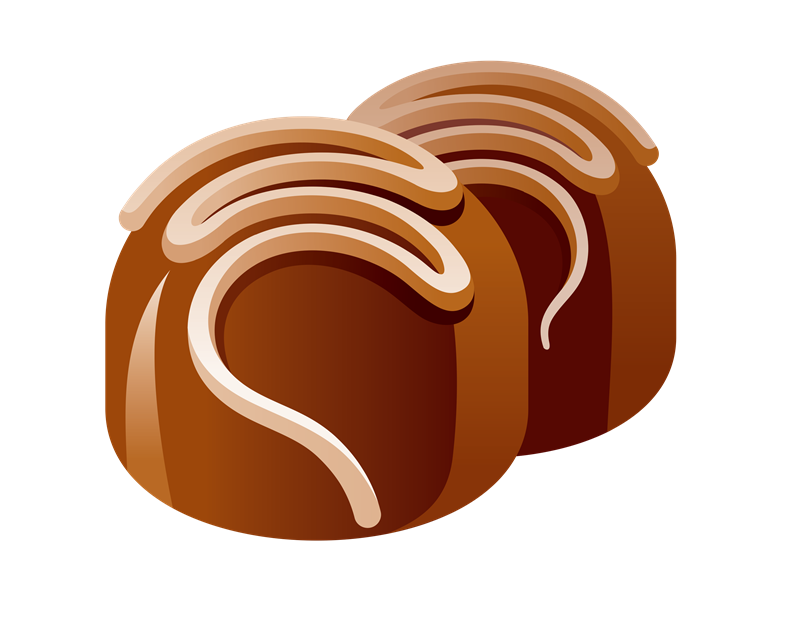
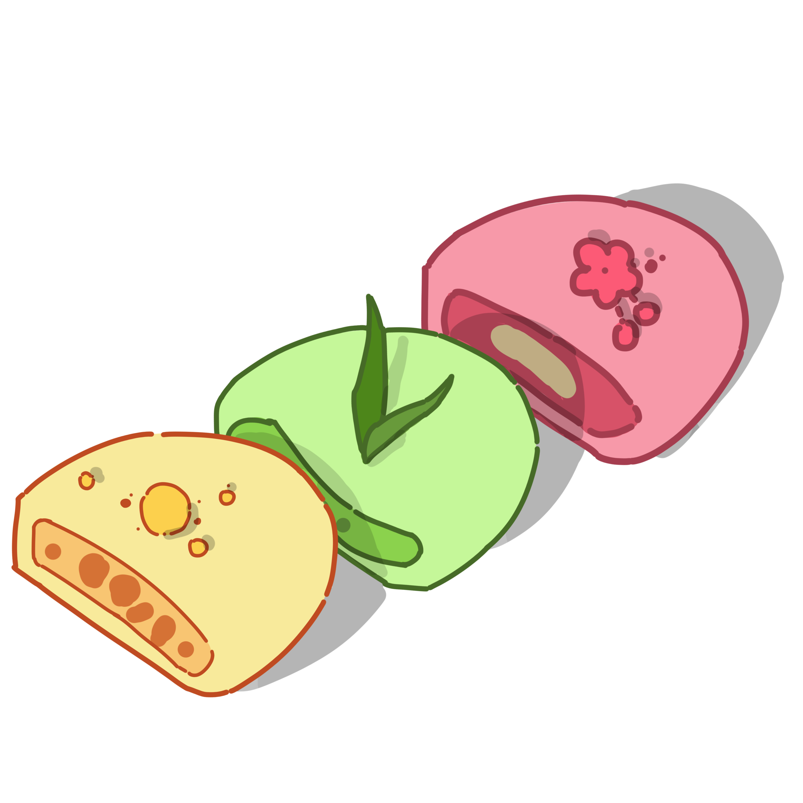

Chocolate Chip Cookies
The best and easy recipe for the chewy chocolate chip cookies you see everywhere !
Ingredients
- 1/2 cup granulated sugar (100g)
- 3/4 cup brown sugar(165 g), packed
- 1 teaspoon salt
- 1/2 cup unsalted butter(115 g), melted
- 1 large egg
- 1 teaspoon vanilla extract
- 1 1/4 cups all-purpose flour(155 g)
- 1/2 teaspoon baking soda
- 4 oz milk or semi-sweet chocolate chunks(110 g)
- 4 oz dark chocolate chunk(110 g), or your preference
Method
- In a large bowl, whisk together the sugars, salt, and butter until a paste forms with no lumps.
- Whisk in the egg and vanilla, beating until light ribbons fall off the whisk and remain for a short while before falling back into the mixture.
- Sift in the flour and baking soda, then fold the mixture with a spatula (Be careful not to overmix, which would cause the gluten in the flour to toughen resulting in cakier cookies).
- Fold in the chocolate chunks, then chill the dough for at least 30 minutes. For a more intense toffee-like flavor and deeper color, chill the dough overnight. The longer the dough rests, the more complex its flavor will be.
- Preheat oven to 350°F (180°C). Line a baking sheet with parchment paper.
- Scoop the dough with an ice-cream scoop onto a parchment paper-lined baking sheet, leaving at least 4 inches (10 cm) of space between cookies and 2 inches (5 cm) of space from the edges of the pan so that the cookies can spread evenly.
- Bake for 12-15 minutes, or until the edges have started to barely brown.
- Cool completely before serving.

Chocolate Cake
A rich and decadent chocolate cake that melts in your mouth.
Ingredients
- All purpose flour
- Granulated white sugar
- Baking powder and baking soda
- Salt
- Egg
- Vegetable oil
- Buttermilk
- Boiling water
- Instant coffee
- Cocoa powder
Method
- Mix the flour, sugar, baking powder, baking soda and salt in a bowl. Sift the ingredients to make sure there are no lumps.
- Break in an egg, and pour in the oil and buttermilk. Use a hand whisk to gently mix until everything comes together.
- Add the boiling water to cocoa powder and instant coffee separately to "bloom" the cocoa powder
- Add the cocoa powder mix to the rest of the batter, and gently fold to combine.
- Bake the cake! (around 20-30 minutes)

Chocolate Truffles
a traditional French chocolate treat consisting of a chocolate ganache core covered in chopped nuts, coconut, or cocoa powder.
Ingredients
- 285g / 10 oz dark chocolate melts
- 2 tbsp (30g) unsalted butter
- 1/2 cup (125ml) cream
Method
- Place chocolate, cream and butter in a microwave proof bowl. Microwave on high for 4 x 30 second bursts.
- Cover bowl with a plate and stand for 5 minutes, then stir until chocolate is melted and smooth
- Place the bowl in the refrigerator for 6 hours
- Put a dinner plate or tray that you will use to place the rolled truffles on in the fridge as well.
- Place cocoa / coatings of choice in a small bowl or plate.
- Remove Ganache from fridge.
- Get an ice pack or bag of frozen peas from the freezer and place on the bench.
- Use a teaspoon to scoop the mixture out into your hands. Roll into ball then place on chilled plate.
- Once all balls are rolled, roll in cocoa or Coatings of choice. Serve at room temp so the chocolate is beautifully creamy inside!

Ice Cream Mochi
Mochi ice cream is a popular Japanese dessert made from a sweet pounded rice dough wrapped around ice cream.
Ingredients
- 3 cup glutinous rice flour
- 0.75 cup sugar
- 6 Tablespoons powdered sugar
- 3 cup water
- food coloring (optional, to change the color of the dough)
- Cornstarch or potato starch
- ice cream of your choice
Method
- Line a sheet pan, scoop ice cream balls onto parchment paper, freeze for 1 hour.
- Make mochi dough: Mix ingredients, microwave, fold, and roll into rectangle. Refrigerate for 30 minutes.
- Cut plastic wrap squares.
- Cut dough circles, brush off excess cornstarch.
- Wrap one ice cream scoop in each dough circle, pinch edges to seal.
- Wrap mochi in plastic wrap, freeze twisted side down for at least 1 hour.
- Store wrapped mochi in freezer-safe bag or container for up to 3 months. Thaw slightly before eating.
